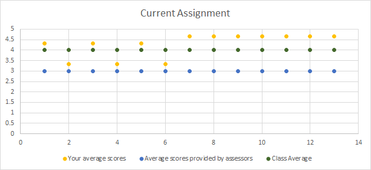

2 Aristotle Applied
2.1 Keywords
Team Work Feedback Survey
2.2 Giving Feedback to Teammates is Hard
Employees today can expect to be a part of dozens of teams over their career. What makes a team effective? Skills? Work Ethic? Interpersonal skills? As the world becomes increasingly connected, face to face communication decreases and the ability to perceive non-verbal ques becomes more challenging. Peers are often the best sources of feedback for employees, but it is sometimes challenging to offer candid feedback to a peer that you must continue working with and may even genuinely like. For example, take Mike, a senior engineer at google. Mike was very friendly and well-liked. However, in a team setting, he took over the conversation and “everyone was scared to disagree with him.” Mike was blissfully unaware of this area for his career development until his manager asked the team to submit anonymous peer feedback. The feedback was compiled and provided to the team, and Mike had to struggle with understanding that “None of us is as smart as all of us”(Ken Blanchard) and work to address it. With coaching and additional feedback loops, Mike came to understand the importance of listening and drawing out other team members. After modifying his communication skills, Mike became a more effective employee, was happier in his job, and his team produced higher quality work.
2.3 Aristotle Applied to the Rescue!
This Big Idea proposes that the UC Berkeley Data Science program can not only transform students into data scientists, but also make them more effective team members by leveraging the “Aristotle Applied” pilot. Project Aristotle was an internal Google initiative to discover the secret sauce of consistently high performing teams. The Project Aristotle team discovered that while teams can take on many shapes and sizes and skill levels, consistently high performance teams worked well together because they encouraged everyone to take part in the coversation and understood how to read each other. With these two tendancies, individuals contribute equally in their own unique ways; thus elevating the collective intelligence of the group.
The I-School already requires students to work with peers from a variety of backgrounds. These experiences can offer insights into communication styles and effectiveness if feedback from teammates is harnessed in a productive way. After every group project in every class, students will be required to submit results to an anonymous survey for each of their team members. At the mid-term and end of term, compiled, anonymous results will be shared. These surveys will not be used in the grading process, so team members can be as honest as possible. The surveys are mereley a tool to make the entire cohort more effective at working with people from a range of backgrounds. Advisors will be trained in educational support for teamwork topics and can be a resource for students who need guidance to improve.
Here is the list of questions that will be included in the survey largely focused on the questions that the Google study raised as key factors for high performance teams:
Project Team. Please respond on a scale of 1 (Strongly Disagree) to 5 (Strongly Agree).
1. Did the team have the adequate skills to complete the project?
2. Was the work evenly distributed?
3. Did all team members contribute to the discussion equally?
4. Did you personally feel safe to brainstorm ideas without judgment?
5. Did your team produce a quality product?
6. Would you want to work with this particular team again?
Individual. Please respond on a scale of 1 (Strongly Disagree) to 5 (Strongly Agree).
1. Did John Smith contribute equally to the project?
2. Did John Smith have the skills to complete the project?
3. Did John Smith speak more (5) or less (1) than others? (Score will actually be the response’s absolute distance from 3)
4. Is John Smith a strong communicator?
5. Did John Smith encourage (5) or discourage (0) your leads?
6. Would you like to work with John Smith again?
7. Any Additional Feedback: (Free form text box)
Here are some example output graphs: 
Trends within a Class
Trends Over Program
2.4 Increased Self Awareness, Better Teams, Better Output
Working well in teams is a necessary skill set for any data scientist. This program gives students the opportunity to develop and refine their team skills in a safe environment. The opportunity to get valuable insights from a variety of teammates will help students become more effective at working with different types of people and more open/resilient to constructive feedback. Having a consistent set of questions to answer about teammates and to personally consider on new project endeavors will help students understand trends over time and experiment with how to produce the best results with a variety of teams. Futhermore, over time as the amount of data increaases, the full dataset could become interesting in better understanding how diverse teams thrive. These insights could be used to adjust admissions qualities or curriculum enhancements. Keeping the survey consistent over time will also let enable the school to understand if some adjustments are effective.